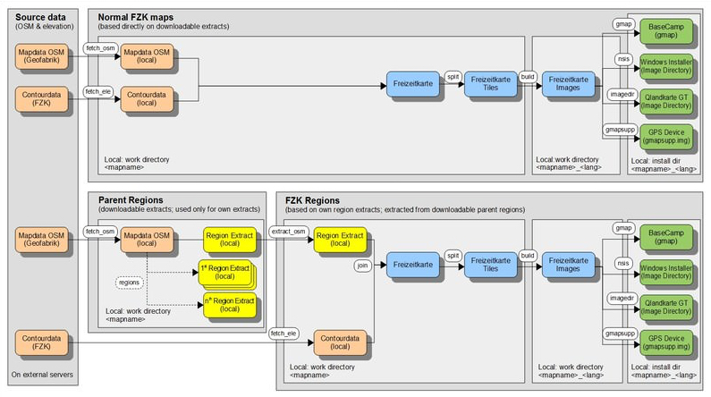

Jedermann ist herzlich eingeladen ... seine eigene Karte zu erstellen. Dies kann unter folgenden Aspekten interessant sein:
- Aktualität:
Es ist möglich, jederzeit eine "neue" Karte aus "tagesaktuellen" OSM-Daten zu erzeugen. Hierzu sind die OSM-Daten aus dem Internet zu laden und die Karte ist neu zu bilden. Alle hierzu erforderlichen Ablaufschritte werden durch verschiedene Aufrufe des Perl-Programmes "mt.pl" vereinfacht. - Inhalt:
Über den Inhalt definieren sich die Objekte (Flächen, Linien, POIs) die auf der Karte in den verschiedenen Vergrößerungsstufen jeweils zur Anzeige kommen. In den Freizeitkarten vorhandene Standardobjekte können entfernt oder individuelle Elemente können hinzugefügt werden. Dies gilt für nahezu alle Elemente des OSM-Datenbestands. Die Definition der Objekte erfolgt im wesentlichen in den drei Styledateien "polygons", "lines" und "points". Die Bearbeitung dieser Dateien erfolgt mit einem Standard-Texteditor (z.B. TextWrangler für OS X oder Notepad++ für Windows). Umfangreiche Kommentare in den Styledateien erleichtern den Einstieg in das Thema. - Design:
Das Design legt das optische Erscheinungsbild der Karte fest. Hierbei kann jedes Objekt in der Darstellung beeinflußt werden. Bei Flächen ist dies z.B. die Farbe, bei Linien z.B. die Breite und bei POIs das Darstellungsicon. Das Erscheinungsbild wird in einer binären TYP-Datei festgelegt, die mit einem speziellen Editor bearbeitet werden kann (z.B. TYPViewer für Windows).

Seit ca. 15.000 Jahren: Der Rheinfall in Schaffhausen ist mit weitem Abstand der größte Wasserfall Europas. Im Sommer stürzen auf 150 Metern Breite im Mittel 600.000 Liter Wasser
pro Sekunde 23 Meter in die Tiefe.
Die Aspekte "Inhalt" und "Design" stehen in enger Wechselwirkung zueinander. Soll z.B. ein neues Objekt auf der Karte angezeigt werden, so ist dieses Objekt sowohl inhaltlich als auch vom Erscheinungsbild zu definieren.
Workflow zur Erstellung einer Freizeitkarte:
Der Workflow in der Entwicklungsumgebung ist je nach Art der herzustellenden Karte unterschiedlich. Wir unterscheiden grundsätzlich zwei Arten:
-
Karten auf Basis von bestehenden OSM Daten Extrakten:
Bei diesem Kartentyp existieren fertige Extrakte vom gewünschten Gebiet auf geofabrik, das heisst wir bauen vereinfacht nach dem folgenden Schema:
- Einmaliges Komplettieren der Entwicklungsumgebung: zuladen der sogenannten boundaries (bootstrap)
- Herunterladen der OSM Daten für die gewünschte Karte und der dazugehörigen Höhenlinien (fetch_*)
- Zusammensetzen der OSM Daten und der dazugehörigen Höhenlinien (join)
- Aufteilen der Gesamtdaten in Kacheln oder sogenannte Tiles (split)
- Kompilieren der Karte (build)
- Bauen der Kartenversionen für GPS, BaseCamp, usw (gmap, nsis, imagedir, gmapsupp)
-
Karten für die wir in der Entwicklungsumgebung die Region zuerst zuschneiden müssen:
Bei diesem Kartentyp existieren keine fertigen Extrakte vom gewünschten Gebiet auf GeoFabrik, darum müssen wir ein grösseres Gebiet als das eigentlich gewünschte herunterladen (in den meisten Fällen ganz Europa) und selbst zuschneiden. Bei diesem Kartentyp bauen wir vereinfacht nach dem folgenden Schema:
- Einmaliges Komplettieren der Entwicklungsumgebung: zuladen der sogenannten boundaries (bootstrap)
- Herunterladen der OSM Daten für übergeordnete Gebiet, im Normalfall ganz Europa (fetch_osm)
- Zuschneiden des übergeordneten Gebiet auf die gewünschte Grösse, DEU+ zum Beispiel (extract_osm)
- Herunterladen der Höhendaten direkt für das gewünschte Gebiet, DEU+ zum Beispiel (fetch_ele)
- Zusammensetzen der OSM Daten und der dazugehörigen Höhenlinien (join)
- Aufteilen der Gesamtdaten in Kacheln oder sogenannte Tiles (split)
- Kompilieren der Karte (build)
- Bauen der Kartenversionen für GPS, BaseCamp, usw (gmap, nsis, imagedir, gmapsupp)
Überblick über den Workflow für beide Karten Typen:

Bedienung:
MapTool (mt.pl):
Ruft man das Utility "mt.pl" (MapTool) mit dem Argument -h auf, wird folgender Hilfetext ausgegeben:
$ perl mt.pl -?
mt.pl - Map Tool for creating Garmin maps, 1.3.15 - 2019/03/02
Usage:
perl mt.pl [--ram=<value>] [--cores=<value>] [--ele=<value>] \
[--typfile="<filename>"] [--style="<dirname>"] \
[--language="<lang>"] [--unicode] [--ntl="<name-tag-list>"] \
[--downloadbar] [--downloadspeed=<value>] [--continuedownload]\
[--dempath=<path>]\
<Action> <ID> | <Code> | <Map> [PPO] ... [PPO]
or
perl mt.pl bootstrap [urls <url_bounds> <url_sea>]
perl mt.pl bootstrap list
or for getting help:
perl mt.pl -? | -h
Examples:
perl mt.pl bootstrap
perl mt.pl build Freizeitkarte_Hamburg
perl mt.pl --ram=1536 --cores=2 build Freizeitkarte_Hamburg
perl mt.pl --ram=6000 build 5815
perl mt.pl --ram=6000 --cores=max build 5815
perl mt.pl --ram=6000 --cores=max build Freizeitkarte_Oesterreich DEXTENDEDROUTING
Options:
--ram = javaheapsize in MB (join, split, build) (default = 1536)
--cores = max. number of CPU cores (build) (1, 2, ..., max; default = 2)
--ele = equidistance of elevation lines (fetch_ele) (10, 20; default = 20)
--typfile = filename of a valid typfile to be used (build, gmap, nsis, gmapsupp, imagedir, typ) (default = freizeit.TYP)
--style = name of the style to be used, must be a directory below styles (default = fzk)
--language = overwrite the default language of a map (en=english, de=german);
if you build a map for another language than the map's default language,
this option needs to be set for all subcommands, else it swaps back to the default language and possibly fails.
--unicode = Build the map in unicode (CP65001) instead of in the native codepage of the map language.
--unicode
--ntl = overwrite the default name-tag-list for the mkgmap run (name) with a specific list, e.g.
--ntl="name:en,int_name,name"
Please check mkgmap documentation for more information.
--downloadbar
= Show a download progress bar during actions 'bootstrap', 'fetch_osm' and 'fetch_ele'.
--downloadbar
--downloadspeed
= Set speed limit for downloads during actions 'bootstrap', 'fetch_osm' and 'fetch_ele'.
Setting speed limit in number of bytes:
--downloadspeedlimit=15
You can also set the speed limit in kilobytes (k), megabytes (m) or gigabytes (g) by using the correct character, e.g.:
--downloadspeedlimit=15m
--continuedownload
= try to continue interrupted downloads for actions 'fetch_osm' and 'fetch_ele'.
--continuedownload
Restrictions:
- can only work if you don't use the 'create' action, which cleans out any files from the working directories
- using this option on fully completed downloads will fail to download anything new.
- not guaranteed to work always and might create data garbage, but worth a try on huge downloads
--dempath
= specify a directory or ZIP file with HGT files used to add a Digital Elevation Model subfile to the map (build).
--dempath=D:/fzk/hgtfiles
--dempath=D:/fzk/hgtfiles/view3.zip
N.B. On Windows, use forward slashes.
Please check mkgmap documentation for more information.
--demtype
= specify the resolution of the HGT file in arc seconds. Supported resolutions are 1 and 3.
Used to define default demdist values.
--demtype=1
--demtype=3
--demdists
= Define dem-dists values for mkgmap in case --demtype is not set.
--demdists="9942,19884,29826,39768,49710,59652,69594,79536"
Please check mkgmap documentation for more information.
PPO = preprocessor options (multiple possible), to be invoked with D<option>
Arguments:
Action = Action to be processed
ID = ID of the to processed map
Code = Code of the to processed map
Map = Name of the to be processed map
Actions:
bootstrap = Complete the Environment with needed downloads (boundaries)
create = 1. (re)create all directories
fetch_osm = 2a. fetch osm data from url
fetch_ele = 2b. fetch elevation data from url
join = 3. join osm and elevation data
split = 4. split map data into tiles
build = 5. build map files (img, mdx, tdb)
gmap = 6. create gmap file (for BaseCamp OS X, Windows)
nsis = 6. create nsis installer (full installer for Windows)
gmapsupp = 6. create gmapsupp image (for GPS receiver)
imagedir = 6. create image directory (e.g. for QLandkarte)
ID = Code = Map (default language):
5810 = BADEN-WUERTTEMBERG = Freizeitkarte_BADEN-WUERTTEMBERG (de)
5811 = BAYERN = Freizeitkarte_BAYERN (de)
5812 = BERLIN = Freizeitkarte_BERLIN (de)
5813 = BRANDENBURG = Freizeitkarte_BRANDENBURG (de)
5814 = BREMEN = Freizeitkarte_BREMEN (de)
5815 = HAMBURG = Freizeitkarte_HAMBURG (de)
5816 = HESSEN = Freizeitkarte_HESSEN (de)
5817 = MECKLENBURG-VORPOMMERN = Freizeitkarte_MECKLENBURG-VORPOMMERN (de)
5818 = NIEDERSACHSEN = Freizeitkarte_NIEDERSACHSEN (de)
5819 = NORDRHEIN-WESTFALEN = Freizeitkarte_NORDRHEIN-WESTFALEN (de)
5820 = RHEINLAND-PFALZ = Freizeitkarte_RHEINLAND-PFALZ (de)
5821 = SAARLAND = Freizeitkarte_SAARLAND (de)
5822 = SACHSEN = Freizeitkarte_SACHSEN (de)
5823 = SACHSEN-ANHALT = Freizeitkarte_SACHSEN-ANHALT (de)
5824 = SCHLESWIG-HOLSTEIN = Freizeitkarte_SCHLESWIG-HOLSTEIN (de)
5825 = THUERINGEN = Freizeitkarte_THUERINGEN (de)
6040 = AUT = Freizeitkarte_AUT (de)
6056 = BEL = Freizeitkarte_BEL (fr)
6756 = CHE = Freizeitkarte_CHE (de)
6203 = CZE = Freizeitkarte_CZE (en)
6208 = DNK = Freizeitkarte_DNK (en)
6276 = DEU = Freizeitkarte_DEU (de)
6250 = FRA = Freizeitkarte_FRA (fr)
6442 = LUX = Freizeitkarte_LUX (fr)
6528 = NLD = Freizeitkarte_NLD (nl)
6616 = POL = Freizeitkarte_POL (pl)
6752 = SWE = Freizeitkarte_SWE (en)
Terminal / Kommandofenster:
- die Arbeitsschritte zur Erzeugung einer Karte erfolgen über ein Terminal
- hierzu sind die einzelnen Kommandos manuell im Terminal einzugeben
- oder alternativ können entsprechende Batchdateien erstellt werden
- das Windows-Synonym für Terminal lautet oft auch "Kommandofenster"
Vorbedingungen:
- Perl (5.10 oder höher) muß installiert sein
- Java (1.8 oder höher) muß installiert sein
- mindestens 2 GB Hauptspeicher
Empfehlungen zur Erzeugung einer Karte für ein Bundesland:
- siehe Vorbedingungen
- Standardeinstellungen
Empfehlungen zur Erzeugung einer Karte für Deutschland:
- leistungsstarke Mehr-Kern-CPU
- Java-Virtual-Machine mit 64bit (32bit Version hat zu kleine maximale Speicherzuteilung)
- je benutztem Prozessorkern sollte mindestens 2 GB RAM zur Verfügung stehen
Anmerkung:
- der Einstieg in die Kartenentwicklung sollte mit einer möglichst kleinen Karte erfolgen
- der Buildprozeß der Deutschlandkarte dauert bei Verwendung von 4 CPU-Kernen ca. 45 Minuten
- weitere Informationen zur Entwicklungsumgebung finden sich in der Datei "readme.txt"
- die Entwicklungsumgebung ist lauffähig unter OS X, Windows und Linux
- unter 64-Bit Linux-Systemen muss die Unterstützung für 32-Bit Programme installiert sein
- für das Erstellen des Windows-Installers unter Linux muss das NSIS (Nullsoft Scriptable Install System) Paket installiert sein
Schalter: In den Kartenstyles sind einige logische Schalter (bedingte Übersetzung) eingebaut, die aktiviert werden können:
- WINTERSPORT: Darstellung von Linien für Wintersportaktivitäten (Pisten, Loipen, ...) [lines-master]
- EXTENDEDROUTING: Routing auch über (Berg-)Wanderwege der Klassen T4-T6 [lines-master]
- TRIGMARK: Darstellung von Trigonometrischen Markierungen [points-master]
- DRINKINGWATER: Darstellung von Trinkwasserstellen [points-master]
- KULTURLAND: Darstellung von Ackerflächen [polygons-master]
Freizeitkarte Entwicklungsumgebung:
Zusatzinformation:
Die Datei mit der Entwicklungsumgebung liegt unter dem Namen fzk‑mde‑garmin‑LATEST.zip auf github zum Herunterladen bereit. In der ZIP Datei ist das bekannte Verzeichnis
Freizeitkarte‑Entwicklung in einem zusätzlichen Verzeichnis mit dem Namen fzk‑mde‑garmin‑Latest verpackt.